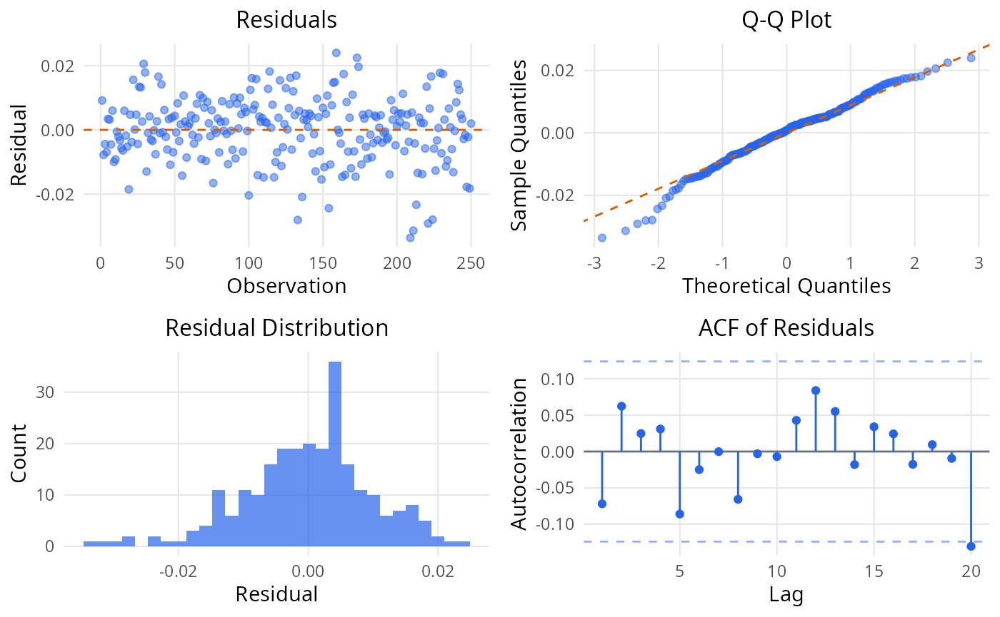

1. Title & Abstract
This article describes the two-layer AI advisor: a
deterministic, fully-offline grounding layer that computes diagnostics
and rule-based recommendations from the package’s own numbers, and an
optional LLM layer that narrates — but never invents — those numbers.
After reading, you will understand the advisor’s design and the
grounding invariant that keeps it trustworthy, and you will see the
deterministic layer run live on dieselgate.
2. When to Use This Method
Use the advisor when you want a defensible interpretation of an event study without hand-writing the diagnostic checklist: which test statistic is appropriate given the normality, autocorrelation, overlap, and cross-sectional spread of your data, and where the robustness caveats lie. The deterministic layer alone is enough for reproducible, offline advice; the LLM layer only adds prose.
3. Intuition
Two layers, one direction of trust. The deterministic layer measures the study (Shapiro-Wilk normality, Ljung-Box autocorrelation, R^2, CAR dispersion, window overlap) and maps those measurements to recommendations through fixed rules. The LLM layer is handed only those computed facts and asked to phrase them; it is structurally prevented from producing a number the deterministic layer did not.
4. Model & Null Hypothesis (Grounding Invariant)
This is a design article, not a statistical
estimator, so it carries no academic formula. Its central claim is the
advisor’s grounding invariant, quoted from the ai-advisor
vignette:
The advisor never fabricates a number. Every claim it returns is provably tied to a package-computed diagnostic.
The invariant is enforced by a runtime guard in R, independent of the
LLM: the recommendation and robustness flags derive deterministically
from es_diagnostics(), so they are identical whether or not
any model is contacted. There is no null hypothesis to test here — the
“null” the design defends against is a hallucinated statistic, and the
guard makes that impossible by construction.
5. Assumptions
-
Fitted pipeline: the task has been through
fit_model()/calculate_statistics()before advising. -
Offline determinism: with
EVENTSTUDY_NO_NETWORK=1, the deterministic layer is a pure function of the task — reproducible across runs and machines. - LLM layer is narration-only: it receives grounded facts, never raw data, and cannot introduce new numbers.
6. Worked Example
The deterministic layer runs fully offline on
dieselgate.
library(EventStudy)
data("dieselgate")
task <- EventStudyTask$new(dieselgate$firm, dieselgate$index, dieselgate$request)
params <- ParameterSet$new()
task <- prepare_event_study(task, params)
task <- fit_model(task, params)
task <- calculate_statistics(task, params)
diag <- es_diagnostics(task) # six-section diagnostics list, offline
advice <- recommend_stat(task) # rule-based test recommendation
robust <- flag_robustness(task) # robustness caveatsThe optional LLM layer mirrors
vignettes/ai-advisor.Rmd: it is eval=FALSE and
shown with static captured output so the build never contacts the
network.
# Requires an API key + network; disabled at build time.
narrative <- es_advise(diag, task_type = "interpret", provider = provider("anthropic"))
narrative
#> The market-model fit is strong (median R^2 ~ 0.6). Residual normality is not
#> rejected for most firms, so the parametric CAR t-test is appropriate; the
#> Patell Z is offered as a standardized cross-check. No estimation-window
#> overlap was detected, so cross-sectional correlation is a minor concern.7. Rendered Table
The estimation_window section of the diagnostics — the
per-event fit and residual checks the advisor reasons over:
est <- as.data.frame(diag$estimation_window)
knitr::kable(
est,
caption = "Per-event estimation-window diagnostics feeding the advisor (offline)."
)| r2 | sigma | degree_of_freedom | acf1 | shapiro_p | dw_stat | ljung_box_p |
|---|---|---|---|---|---|---|
| 0.7048 | 0.0091 | 248 | -0.0170 | 0.0654 | 2.032 | 0.8607 |
| 0.7037 | 0.0100 | 248 | -0.0720 | 0.0042 | 2.140 | 0.8233 |
| 0.7675 | 0.0088 | 248 | -0.0940 | 0.0035 | 2.187 | 0.8430 |
| 0.8483 | 0.0069 | 248 | 0.1468 | 0.0000 | 1.691 | 0.1447 |
8. Rendered Plot
plot_diagnostics(task)
Diagnostic panel used by the deterministic advisor layer.
9. Interpretation
The table in §7 is the ground truth the advisor stands on: each row’s
R^2, residual sigma, Shapiro-Wilk p, Durbin-Watson statistic, and Ljung-Box
p determine which test the rule layer
recommends and which caveats it raises. Because advice and
robust are pure functions of these numbers, re-running the
chunk reproduces them exactly — and the LLM layer, if enabled, can only
restate them. That is the grounding invariant in action: the
interpretation is as trustworthy as the diagnostics, and never more.